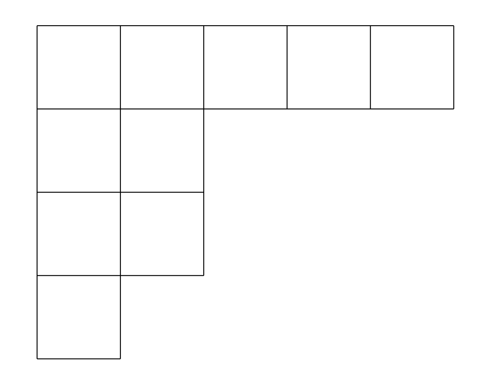
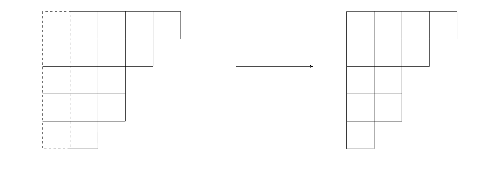
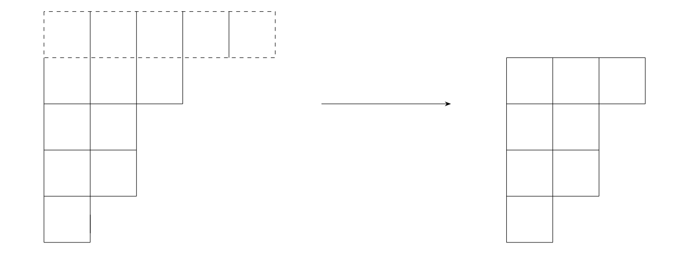

Given an integer partition of $ n $, we consider the impartial combinatorial game LCTR in which moves consist of removing either the left column or
top row of its Young diagram.[1] The program was written in JavaScript with aid of memoised Sprague–Grundy values.
$9 = 5 + 2 + 2 + 1$ ; Thus, the partition $(5, 2^2, 1)\to 9$ is represented by the Young diagram
in Figure 1:

Figure 1 — Young diagram of $(5,2^2,1)$
Moves
There are two types of move, which both the players can perform (which makes the game
an impartial one).
(a) Left-column removal

(b) Top-row removal

References
[1] Eric Gottlieb, Matjaž Krnc, and Peter Muršič.
“Sprague–Grundy values and complexity for LCTR”.
Discrete Applied Mathematics, 346:154–169, 2024.
Elsevier.
arXiv: 2207.05599 [math.CO]
[2] Eric Gottlieb, Jelena Ilić, and Matjaž Krnc.
“Some results on LCTR, an impartial game on partitions”.
Involve, a Journal of Mathematics, 16(3):529–546, 2023.
Mathematical Sciences Publishers.